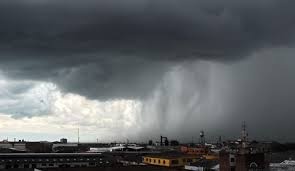

Colombia, un país bendecido por una rica biodiversidad y una variedad de climas, también experimenta la fuerza y el poder de las tormentas. Estas manifestaciones atmosféricas, aunque a veces pueden generar emergencias, también forman parte integral del ecosistema y ofrecen un espectáculo natural impresionante.
